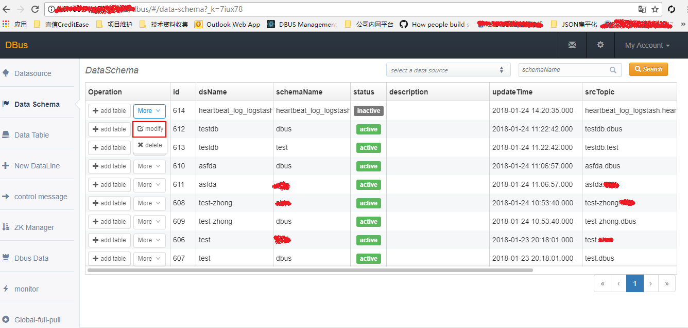

Data Schema管理界面
Data Schema管理界面主要展示schema有关的一些基本信息。在此界面可以进行schema基本信息的修改、schema删除及添加table等操作。
1 Data Schema管理页面入口
登录Dbus Web管理系统，Data Schema管理页面入口如下图所示：

1.1 Schema基本信息修改
点击目标Schema对应的more/modify按钮，如下图所示：

打开Schema基本信息修改页面，如下图所示，仅允许修改description和Status信息，其他关键信息不允许修改，以免造成抽取中的数据混乱。

输入相关信息，保存即可。
1.2 删除Schema
点击目标Schema对应的more/delete按钮，如下图所示：

在弹出的提示框里点击“确定”按钮，即可。如下图所示：

1.3 添加表
参考：添加Schema和表